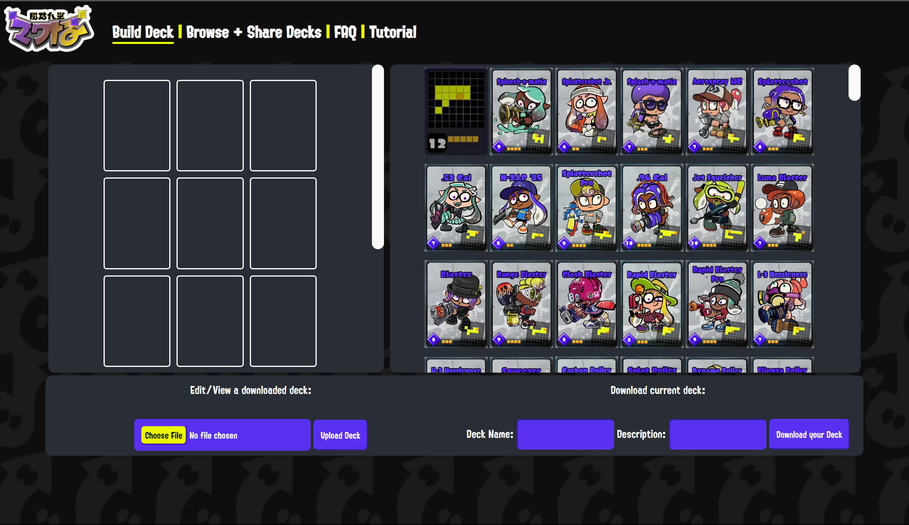
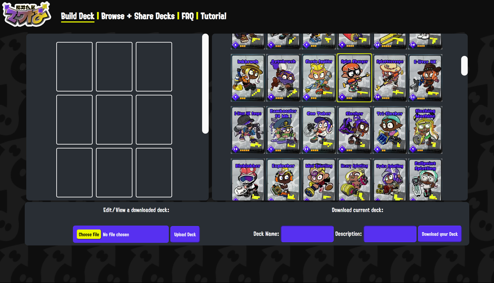
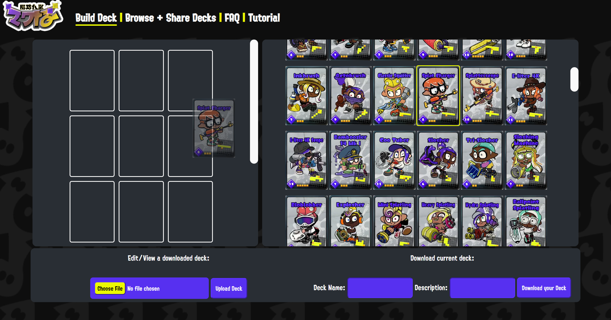
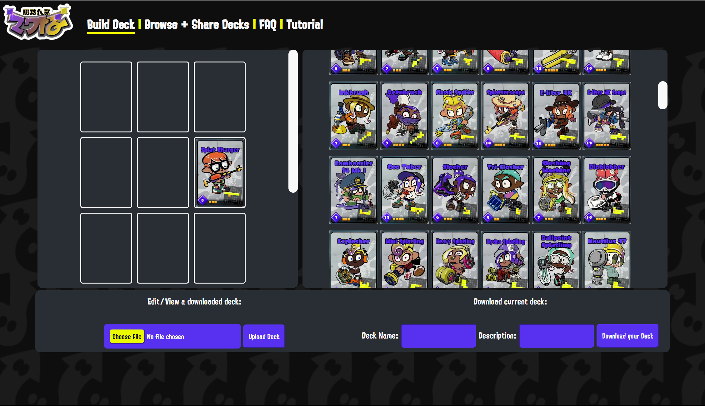
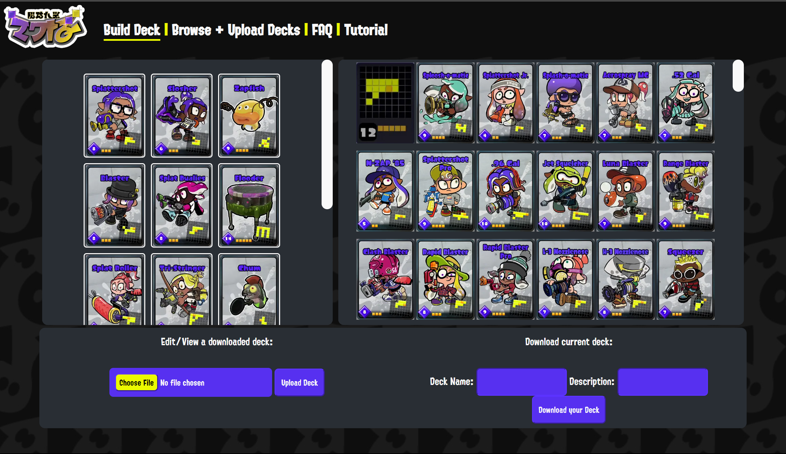
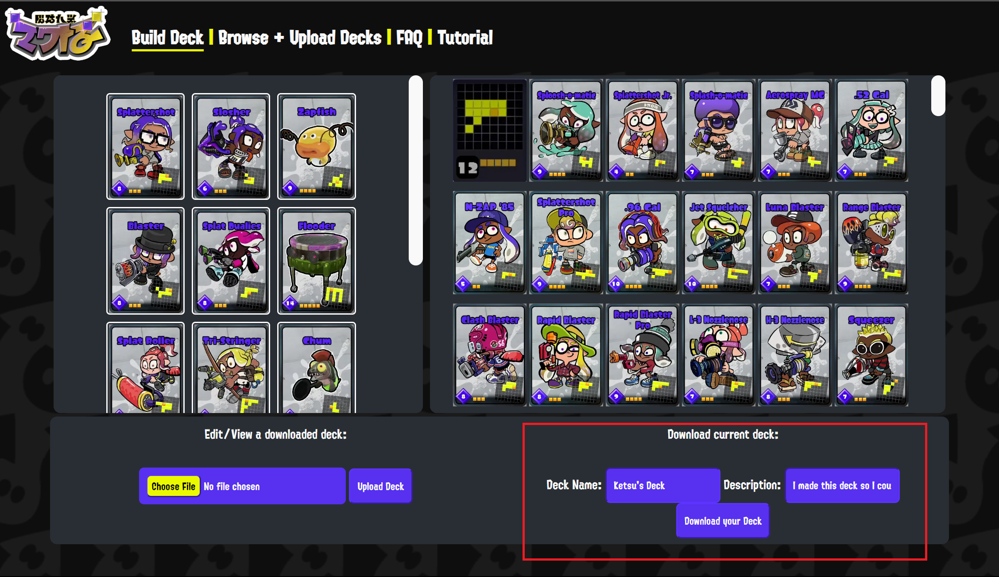

Sections:
Let's get started on building your deck! First, at the top of the screen, you click the "Build Deck" link to be taken to our editor!
You should see something like this. This is the Table Turf deck building screen. To the right is all available cards, and to the left is your empty deck. Then below is how you download and upload your decks, but we will get to that in sections 2 and 3 respectively.
First, let's start simply. Scroll down the list of cards and find a card that you want to add to your deck.
Let's select this one! The Splat Charger, highlighted in yellow! If we want to add it to our deck, we must drag the card over to one of our empty slots.
 Then once we dropped it, it is now a part of our deck! That's all it takes to build a deck! You've got 15 slots to fill, so have fun building your deck!
Once we have filled out all 15 slots in our deck, we can download a file with the contents of our deck! To do this, let's look at the bottom of the screen:
All we need to do is fill in a name and description for our deck, then click "Download Your Deck" in the bottom right corner.
You can share this file with friends, upload it again later to edit further, or share it on this site!
If we share this deck online, then the name of the deck and description will be what's displayed, so be sure to describe your deck uniquely and interestingly! Additionally, do not use any profanity or slurs in your deck name and description.
If you have a deck file— whether that be a file that was shared by a friend, downloaded from this site, or one that you made— you can view and edit it by uploading it to the editor!
All we have to do is click "select file" in the bottom left corner, select the file we wish to view or edit, then click "Upload Deck." You can now view and edit the deck you uploaded!
Sharing your deck online couldn't be any easier! All you have to do is click the "Browse + Share Decks" link at the top of the screen. Once you are there, you can click "Choose File", select the file you wish to upload, then click "Share Your Deck!" and boom! Your deck should be at the top of the page!
You can also feel free to browse other user-uploaded decks here! Just click "Download" on any that may interest you, and upload them to the editor to check them out!